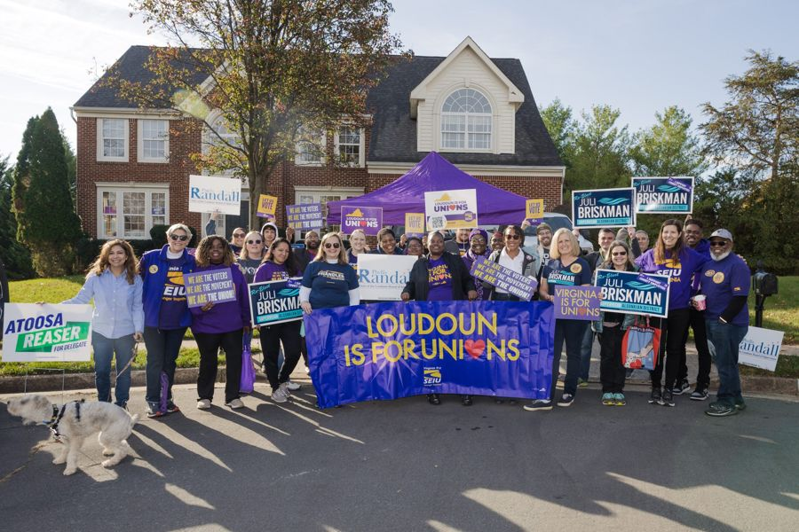
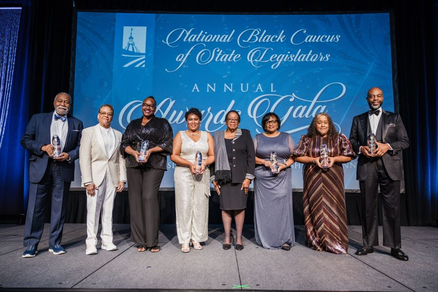
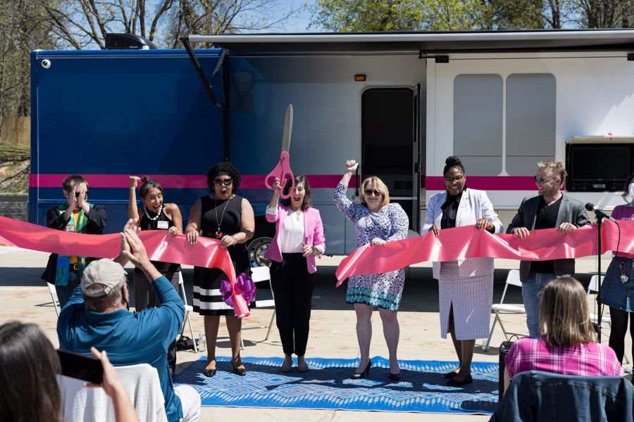
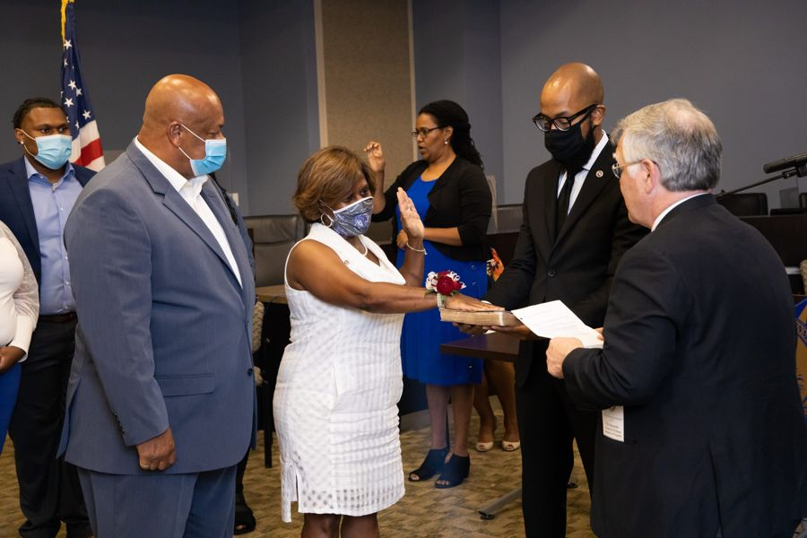
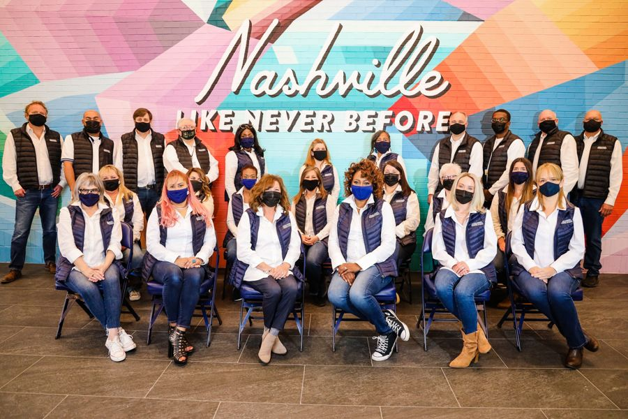
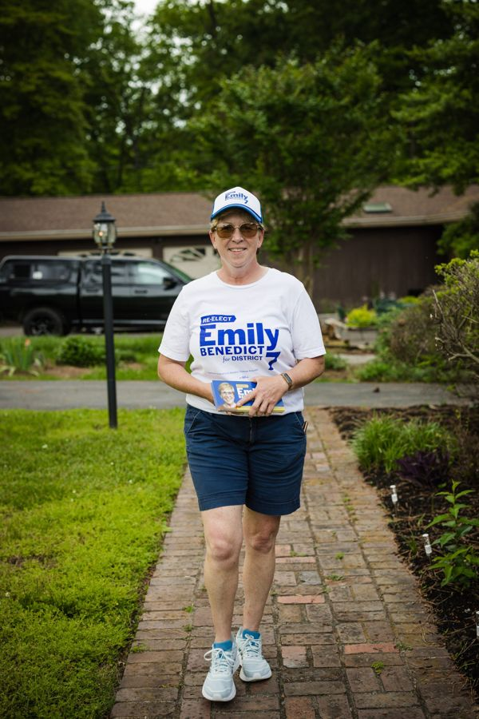

Clients
Trusted byleaders.
Mayors, members of Congress, judges, legislators, unions, nonprofits and brands. Forty campaigns and causes, and counting.
 Metro & cityMayor of Nashville, TN – Freddie O’Connell
Metro & cityMayor of Nashville, TN – Freddie O’Connell Elected officialsTN State Rep. – Justin Jones
Elected officialsTN State Rep. – Justin Jones Elected officialsTN State Senator – London Lamar
Elected officialsTN State Senator – London Lamar Organizations & brandsNBA Memphis Grizzlies
Organizations & brandsNBA Memphis Grizzlies CampaignsMike Bloomberg For President
CampaignsMike Bloomberg For President Elected officialsDistrict Attorney of Nashville, TN – Glenn Funk
Elected officialsDistrict Attorney of Nashville, TN – Glenn Funk Metro & cityCouncilwoman At-Large – Zulfat Suara
Metro & cityCouncilwoman At-Large – Zulfat Suara Metro & cityCouncilwoman At-Large – Olivia HillJudiciaryJudge Ana L. Escobar
Metro & cityCouncilwoman At-Large – Olivia HillJudiciaryJudge Ana L. Escobar
Organizations & brandsSEIU – Virginia Elected officialsSchool Board Member – John LittleOrganizations & brandsTennessee Higher Education Initiative (THEI)
Elected officialsSchool Board Member – John LittleOrganizations & brandsTennessee Higher Education Initiative (THEI)
Organizations & brandsNational Black Caucus of State LegislatorsOrganizations & brandsThe DJ AOneCampaignsOmar Passons For San Diego County Board of SupervisorsMetro & cityCouncilwoman Brenda Gadd CampaignsMarie Franklin For Mayor of East St. Louis, ILOrganizations & brandsJerry L. Maynard, IIOrganizations & brandsBishop Jerry MaynardMetro & cityCouncilman Zach YoungMetro & cityCouncilwoman Jennifer Gamble
CampaignsMarie Franklin For Mayor of East St. Louis, ILOrganizations & brandsJerry L. Maynard, IIOrganizations & brandsBishop Jerry MaynardMetro & cityCouncilman Zach YoungMetro & cityCouncilwoman Jennifer Gamble
Organizations & brandsPlanned Parenthood of Tennessee and North MississippiElected officialsLoudoun County Commonwealth’s Attorney – Buta BiberajOrganizations & brandsMarch On – USA
Elected officialsProperty Assessor – Vivian Wilhoite
Elected officialsRegister of Deeds – Karen JohnsonElected officialsSchool Board Member – Sharon GentryElected officialsTN State Rep. – Jesse ChismMetro & cityCouncilman Clay CappMetro & cityCouncilwoman Tasha EllisMetro & cityCouncilman Russ BradfordMetro & cityCouncilwoman Joy Styles
Metro & cityCouncilwoman Emily BenedictJudiciaryJudge Cynthia ChappellJudiciaryJudge Robin K. HayesJudiciaryJudge Jennifer SmithJudiciaryJudge Allegra WalkerMetro & cityVice Mayor of Nashville, TN – Jim ShulmanMetro & cityCouncilwoman At-Large – Burkley AllenElected officialsCriminal Court Clerk of Nashville, TN – Howard GentryReady towin?
Tell us what you’re running for, building or launching. We’ll tell you how we make people remember it.
Email Leo Operations →